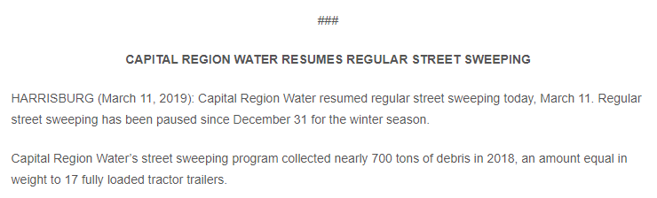
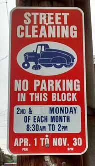
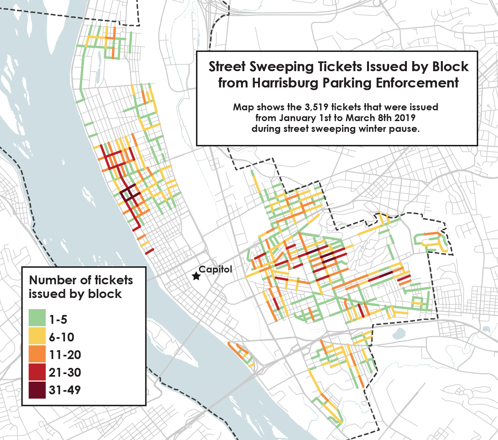
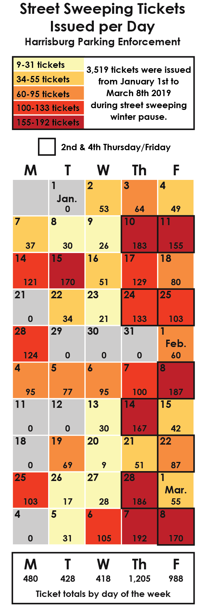
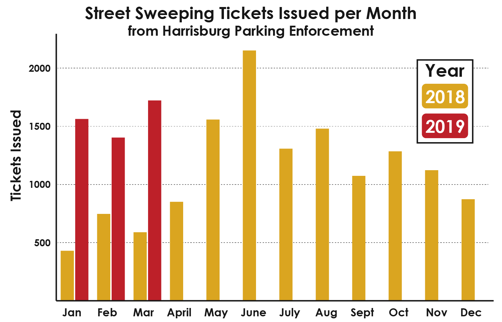

So you may have heard the news. This past February, my car recieved a street sweeping ticket in my city of Harrisburg, PA. The thing was, street sweeping was paused for the winter by Capital Region Water, who performs the sweeping. Regardless, Harrisburg Parking Enforcement continues to give out $30 tickets over the winter even though street sweeping is paused due to winter conditions.
As you can imagin, I was not happy about it. So I decided to not pay the ticket and go to court to fight it on principal. This past spring, I had my date in court date and I won the case. My saga was amusingly chronicled in this must read story from the June issue of TheBurg. My argument was simple: my ticket said STREET CLEANING, suggesting my vehicle obstructed street sweeping, but street sweeping was not performed, therefore my car was not guilty of said infraction. The wise Honorable Barbara Pianka agreed with me and I thank her for the fair judgement.
My story does not end there. I find the policy that street sweeping ticketing is not paused while street sweeping is paused for the winter to be unfair and sometimes dangerous. To me, this violates the social contract between government and the people they serve. It fundamentally irks me to my core. So for me, I have decided to fight the only way I know how: using data, logic, and the hope to sway public opinion and change the policy within the city of Harrisburg. I know I am not the only disgruntled citizen. In fact, Philadelphia has recently grappeled with absentee sweeping and heavy enforcement leading to disgruntled citizens as well. To the west, Pittsburgh does the right thing, they don't enforce street cleaning from the end of November to April. This is a smart and safe policy to learn from.
Shortly after I was vindcated by the court system, I filed a Right-to-Know request with both the Harrisburg Office of Parking Enforcement and SP+ Municipal Services for 15 months worth of street cleaning enforcement data. Interesting fact, both the city and SP+ (Park Harrisburg) enforce street sweeping in different parts of the city. I requested all of 2018 and the first 3 months of 2019 to try and get full picture of parking enforcement in the city. SP+ gave me the runaround and did not grant my request, but the city thankfully did comply with the Right-to-Know request.
This past summer I received my data request and got 15 months of street sweeping enforcement data, telling me the date and the block where each ticket was issued by Harrisburg Parking Enforcement. In all, over 18,000 tickets were issued over the 15 month sample from January 2018 thru to the end of March 2019.
First up, I wanted to know how many, where, and when tickets were given out during this past winter's street sweeping pause by Capital Region Water. As CRW stated on their website, they did not perform street cleaning from January 1st to March 8th 2019 (the Friday before they resumed Monday, March 11th). During this 10 week window of time, Harrisburg Parking Enforcement issued 3,519 street sweeping tickets. At $30 per ticket, that would generate over $105,000 if they were all paid timely. If the ticket is not paid in 4 business days the fine becomes $50. The below map shows where tickets were issued during the winter pause.
During the 2019 winter street sweeping pause, the top 2 most ticketed blocks were the parallel blocks of 1900 Chestnut Street and 1900 Bellvue Road with 49 and 43 tickets per block respectively. Old Uptown was also highly ticketed neighborhood along 2nd, Green, Peffer, and Muench Streets. View the interative map I made to explore the details.
Both of these neighborhoods see street cleaning on 2nd & 4th Thursday & Friday between 8am-12pm as seen in the street sweeping schedule map. Looking at the calender view of how tickets were issued each day during this past winter's sweeping pause, you can see 2nd & 4th Thursday & Friday see the bulk of tickets. When I recieved my ticket on February 28th, I was one of 186 tickets issued that day by Harrisburg Parking Enforcement. Breaking down tickets by day of the week, Thursdays see the most tickets issued. Thursdays compared to Tuesday or Wednesday, see about 3 tickets issued for every 1 ticket on those days.
As for why 2nd & 4th Thurday & Friday from 8am-12pm see the most tickets it is a bit uncertain to me. Part of it might be the early start of 8am before people depart for work or wake. Part of it also might be neighborhood density, car ownership, number of street parking spaces, or business locations close by. Looking at Census figures, Harrisburg has around 20,000 vehicles amongst the 50,000 people who live here. Over the 15 month full dataset, the 200 block of Muench Street had a whopping 210 tickets issued, taking home the title as the most ticketed block in the city. Little Amps coffee shop just happens to be located right in the middle of the 200 block of Muench Street and is visited heavily from 8am-12pm.
Next up, I wanted to take a look at the full 15 month dataset from my Right-to-Know request. As mentioned, I had all of 2018 and the first 3 months of 2019. Looking at tickets issued per month, The first 3 months of 2019 saw over 2.5 times as many tickets issued as that same time period from 2018. This finding was very shocking to me and I am curious to know if this trend continued over the spring and summer of 2019.
The trend month-to-month in 2018 saw an uptick during the warm months, as I would expect because these are the months with the most active street cleaning. The high was June of 2018 with 2,152 tickets issued and the low was January 2018 with 430 tickets issued. See the interactive map, and toggle the Show Full Dataset button to see all of the 15 months mapped.
This next section I am writing directly to Mayor Papenfuse and Harrisburg City Council. You have had a chance to review sweeping enforcement data. My request to you is simple, please cancel street sweeping enforcement over the winter months when Capital Region Water pauses their sweeping. This will require minimal coordination and could be an agreed timeframe.
I expect a counter argument might be that you use that time to remove snow along street curbs. I call foul on that argument, as I have never observed it or heard of it happening. In snow emergency cases, you announce times for residents to move vehicles, as has been done in the past. The true reason is money. We all know that. It is the $105,000 over 10 weeks during this winter's sweeping pause and contracts with SP+ to help pay down the city's debts. The city and SP+ are using street sweeping to make easy money off forgetful residents and that is not right.
Sometimes it is more than being forgetful, it is dangerous. Tickets can still be issued on days with snow or ice. I know because of another ticket I recieved in 2017. The officer dug through 6 inches of fresh overnight snow to place a ticket under the wiper blade of my car. Harrisburg schools were canceled that day, but street sweeping enforcement was not. This is a safety issue too.
Mayor Papenfuse, I have voted for you in every election and you have done good things for our city. Don't make this the reason I change my vote. Please do the right thing and stopping street sweeping enforcement over the winter. Please honor the social contract between government and the people.